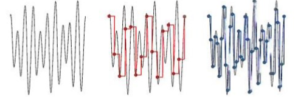

Forklare hvordan de fysiske signalene i datautstyr kan tolkes som lyd
Lagrer en bølge, med noen datapunkter.
Hvordan lagre lyd
Lagres som datapunkter fra en graf.
Det betyr at jo flere datapunkter, jo bedre lydkvalitet.
Forkjellige formater
- Lossless
- FLAC "Free lossless Audio Codec"
- Lossy
- mp3